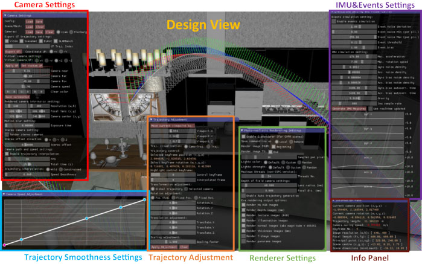
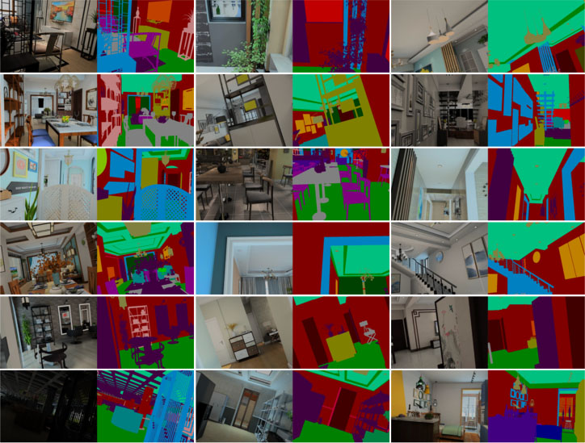

Datasets have gained an enormous amount of popularity in the computer vision community, from training and evaluation of Deep Learning-based methods to benchmarking Simultaneous Localization and Mapping (SLAM). Without a doubt, synthetic imagery bears a vast potential due to scalability in terms of amounts of data obtainable without tedious manual ground truth annotations or measurements. Here, we present a dataset with the aim of providing a higher degree of photo-realism, larger scale, more variability as well as serving a wider range of purposes compared to existing datasets. Our dataset leverages the availability of millions of professional interior designs and millions of production-level furniture and object assets -- all coming with fine geometric details and high-resolution texture. We render high-resolution and high frame-rate video sequences following realistic trajectories while supporting various camera types as well as providing inertial measurements. Together with the release of the dataset, we will make executable program of our interactive simulator software as well as our renderer available. To showcase the usability and uniqueness of our dataset, we show benchmarking results of both sparse and dense SLAM algorithms.
 |
|  |
|  |
We have presented a very large synthetic dataset of indoor video sequences that accesses millions of interior design layouts, furniture and object models which were all professionally designed to a highest specification. We then provide variability in terms of lighting and object rearrangement to further devise our scenes and simulate the environment of daily life. As a result, we obtain highly photo-realistic footage at a high frame-rate. Furthermore, a large variety of different trajectory types was synthesized, as we believe the temporal aspect should be given closer attention. We demonstrate the usefulness of our dataset by evaluating SLAM algorithms.
In this work, we configured lighting and scene changes in a random fashion due to lack of real-world ground truth for lighting and scene changes. Also, the scene rearrangement was obtained via a physics engine accessing physical parameters e.g. mass, size, friction coefficient etc. Alternatively, a data-driven approach could be used - which we leave as future work.
| Download |
TODO.
| Citation |
@inproceedings { InteriorNet18, author = { Wenbin Li and Sajad Saeedi and John McCormac and Ronald Clark and Dimos Tzoumanikas and Qing Ye and Yuzhong Huang and Rui Tang and Stefan Leutenegger }, booktitle = { British Machine Vision Conference (BMVC) }, title = { InteriorNet: Mega-scale Multi-sensor Photo-realistic Indoor Scenes Dataset }, year = { 2018 } }
| Licence |
TODO.
| Acknowledgements |
We would like to thank Kujiale.com for providing their database of production furniture models and layouts, as well as access to their GPU/CPU clusters. We also thank the Kujiale artists and other professionals for their great efforts into editing and labelling millions of models and scenes. We also highly appreciate comments and technical support from Kujiale Rendering Group, as well as helpful discussions and comments from Prof. Andrew Davison and other members of Robot Vision Group of Imperial College London. This research is supported by the EPSRC grants PAMELA EP/K008730/1, Aerial ABM EP/N018494/1, and Imperial College London.
Last updated: 20th December 2017